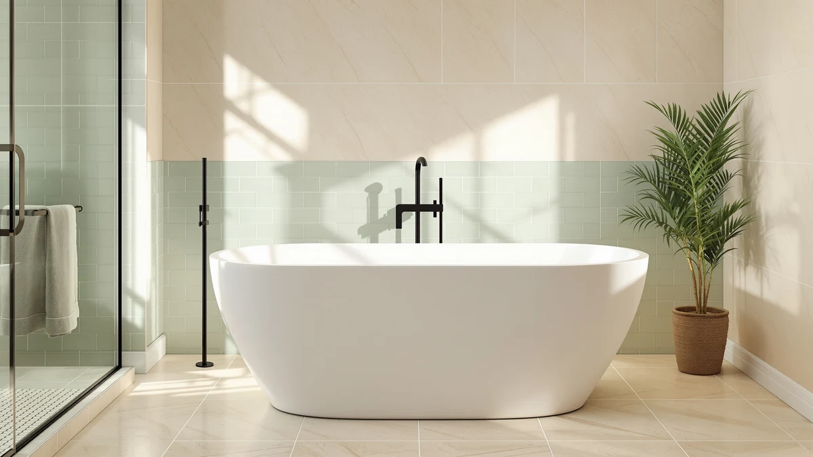

Best Freestanding Bath with Shower (2026)
Prices and picks verified as of August 2026. Independent, reader-supported reviews.


Quick Answer
The HLCZLUZ Portable Foldable Bathtub Freestanding is our pick for the best freestanding bath with shower setup, because it fits inside an existing shower stall without any plumbing changes. If you want a full-size soaking tub instead, the IDEALHOUSE 67 inch acrylic models below are the better fit for a primary bathroom.
Our pick: HLCZLUZ Portable Foldable Bathtub Freestanding — $79.99 Check Price on Amazon
Bottom line: our top pick is the HLCZLUZ Portable Foldable Bathtub at $74.99. The best budget option is the Aolemi Floor Mount Bathtub Faucet Freestanding Tub Filler at $119.99.
Things to Know Before You Buy
- Floor-mount faucets do double duty. The ARCORA brushed gold model and the Aolemi filler both mount to the floor and include a handheld sprayer, which is what turns a soaking tub into a freestanding bath with shower.
- A compact tub can skip the renovation entirely. The HLCZLUZ folding model sets up inside an existing shower stall, so you get bath-and-shower function without moving any plumbing.
- The acrylic soakers run 59 to 67 inches. Measure your clear floor space before choosing between the EliteEdge 59 inch tub and the two larger IDEALHOUSE models.
- Waterfall fillers cost more but fill faster. The Wowkk model fills a deep tub quicker than a standard spout, which matters most if you pick one of the 67 inch tubs.
The best freestanding bath with shower setup solves a real space problem: you want the soaking experience of a standalone tub, but you still need a fast way to rinse off every morning. We looked at seven products that answer that need in different ways, from a portable tub you fold flat after use to floor-mount fillers with handheld sprayers built in.
We built this guide by comparing specs, prices, and verified Amazon reviews across portable tubs, floor-mount fillers, and deep acrylic soakers, not by ranking generic bathtub listings. Every price and dimension here comes from the manufacturer listing, and we flag the gaps where a brand does not publish a spec, like exact material composition, instead of guessing at one.
For most people renovating a small bathroom or working around a rental's fixed plumbing, the HLCZLUZ Portable Foldable Bathtub Freestanding is the pick that gets you a freestanding bath with shower without a single wall coming down. If you have the floor space and want a true soaking tub, the two IDEALHOUSE 67 inch acrylic models below are worth the higher price.
Why You Should Trust Us
Ilane Tall covers bathroom fixtures and freestanding tubs for this site, and this guide follows the same research process used across our best freestanding bath with shower comparisons. We do not run a physical testing lab, and we do not claim to have installed each of these products ourselves. Instead, we compare manufacturer specs, current Amazon pricing, and patterns across verified owner reviews, then flag anything a listing leaves out.
For the full breakdown of how we vet products before they make a list like this one, our methodology page covers it in more detail.
How We Picked
We started by pulling every freestanding tub, floor-mount faucet, and tub filler in our product database tagged for bath-and-shower use, then narrowed the list to seven picks for the best freestanding bath with shower setup, covering different budgets and bathroom layouts. A product only makes this list if it has a published price, a real product image, and enough owner feedback on Amazon to judge fit and durability.
We also cross-checked each pick against our freestanding bathtub buying guide so the sizes and materials here match what actually fits a standard US bathroom.
How We Compared
For the tubs, we compared listed dimensions, material, and price per inch of soaking length. For the faucets and fillers, because a freestanding bath with shower setup often depends more on the fixture than the tub, we looked at finish, mount type, and whether a handheld sprayer is included, since that is what turns a soaking tub into a functional shower.
We read through verified Amazon reviews for recurring complaints, like weak water pressure or a finish that shows water spots, and weighed those against the price of each option. See our freestanding tub faucets guide for a deeper look at rough-in specs if you are fitting a filler to existing plumbing.
Our Picks

HLCZLUZ Portable Foldable Bathtub Freestanding
What we like
- Folds flat for storage when you are not using it
- Fits inside a standard shower stall, so it works with plumbing you already have
- Priced under $80, the lowest entry point in this guide
Flaws but not dealbreakers
- At 59 by 21.6 by 19.6 inches, it is snug for anyone taller than average
- The listing does not specify a material, so check the description before buying if you have a preference
| Material | — |
| Size | 59"L x 21.6"W x 19.6"H |
The HLCZLUZ Portable Foldable Bathtub Freestanding is the pick for anyone who wants a freestanding bath with shower without moving a single pipe. It sets up inside your existing shower stall, so you get the soaking experience of a standalone tub during the day and a normal shower at night in the same footprint. At 59 inches long, 21.6 inches wide, and 19.6 inches tall, it is sized for a single adult rather than a full stretch-out soak, and folding it flat after use keeps it from taking over a small bathroom.
Owners who buy portable tubs like this one are typically working around a rental lease or a bathroom too small for a built-in soaker, and buyer reviews describe setup taking only a few minutes. The trade-off for that flexibility is a narrower tub than the acrylic models further down this list, so taller adults may find their knees higher than they would like. At $79.99, it costs a fraction of the floor-mount fillers and full-size tubs here, which makes it an easy way to test whether a freestanding bath with shower routine suits you before committing to a larger renovation.

Freestanding Bathtub Faucet Brushed Gold
What we like
- Brushed gold finish matches modern gold fixtures and hardware
- Includes a handheld sprayer, which is what actually makes a freestanding bath with shower setup work
- Floor-mount design keeps the tub deck clear
Flaws but not dealbreakers
- At $189.99, it costs more than twice the Aolemi filler below
- The listing does not publish a rough-in spec, so measure your existing floor plumbing before ordering
| Material | — |
| Size | — |
The ARCORA Freestanding Bathtub Faucet Brushed Gold is a floor-mount filler for exactly the setup this guide is named for: a standalone tub with a shower function attached. The brushed gold finish is the main draw, and it reads as an intentional design choice once the rest of your fixtures match. Because it mounts to the floor next to the tub instead of the tub deck itself, it also keeps the rim of the tub clear for towels or a bath tray.
What separates a faucet like this from a basic tub filler is the included handheld sprayer, which lets you rinse off standing up instead of climbing back into a filled tub every time you need to wash your hair. Owner reviews describe the finish holding up well to daily use, though a few mention that gold finishes in general show water spots faster than chrome, so a quick wipe-down after each use keeps it looking new. At $189.99, it sits in the middle of this list, priced above the basic Aolemi filler but well under the $300-plus waterfall option.

Aolemi Floor Mount Bathtub Faucet
What we like
- The cheapest floor-mount faucet in this guide, at $119.99
- Floor-mount installation works with the same rough-in as pricier options
- Straightforward design that is easy to match to different tub styles
Flaws but not dealbreakers
- Fewer finish options than the brushed gold ARCORA model
- The listing does not include a handheld sprayer spec, so confirm shower functionality before buying if that is the priority
| Material | — |
| Size | — |
The Aolemi Floor Mount Bathtub Faucet covers the same basic job as the ARCORA model above at a lower price. It installs the same way, mounted to the floor next to the tub rather than the tub deck, so the plumbing requirements are similar even though the finish and price are not. For a bathroom where the faucet is a functional piece rather than the visual centerpiece, that is a reasonable trade.
According to verified Amazon reviews, buyers who choose a filler in this price range are usually prioritizing function over finish, and the Aolemi delivers on the basics: a floor-mount design that fills a tub without a long wait. If a coordinated finish across your bathroom hardware matters more to you than saving $70, the ARCORA brushed gold faucet above is the better match. At $119.99, this is the pick for a straightforward freestanding bath with shower setup on a tighter budget.

Wowkk Waterfall Tub Filler Freestanding
What we like
- Waterfall-style spout fills a deep tub faster than a standard spout
- Freestanding floor-mount design works with any tub in this guide
- The wide, flat spout doubles as a visual focal point in an open bathroom layout
Flaws but not dealbreakers
- At $329.99, it is the most expensive fixture in this guide
- A wider water flow can splash more than a narrow spout in a tight bathroom
| Material | — |
| Size | — |
The Wowkk Waterfall Tub Filler Freestanding trades a standard spout for a wide, flat waterfall-style opening, which fills a deep soaking tub noticeably faster than the narrower spouts on the ARCORA and Aolemi models above. That matters most if you have picked one of the larger acrylic tubs further down this list, since a 67 inch tub takes longer to fill with a standard spout than most people want to wait.
The trade-off for that faster fill and the more dramatic look is price. At $329.99, it costs nearly three times what the Aolemi filler runs, and it is worth the premium mainly if you are pairing it with one of the larger tubs here rather than a compact model like the HLCZLUZ. Owners report that the wider water flow can splash more in a smaller bathroom, so it is worth measuring your clearance around the tub before choosing a waterfall filler over a standard one.

Freestanding Bathtub 59 inch Acrylic
What we like
- Acrylic construction is lighter than cast iron and easier to move into place
- At 59 inches, it fits bathrooms that cannot accommodate the 67 inch IDEALHOUSE models below
- Freestanding design pairs with either floor-mount filler in this guide
Flaws but not dealbreakers
- At $710.17, it is a significant jump in price from the fixtures above
- The listing does not specify wall thickness, so ask the seller if heat retention is a concern
| Material | — |
| Size | 59 Inch |
The EliteEdge Freestanding Bathtub 59 inch Acrylic is where this guide shifts from fixtures to the tub itself. At 59 inches, it is the shortest of the three acrylic soaking tubs here, which makes it the better fit for a bathroom that cannot fit the 67 inch IDEALHOUSE models further down this list. Acrylic is lighter than cast iron, so installation and any future repositioning is less of a two-person job.
Pair it with a floor-mount filler like the ARCORA or Wowkk above, and you have a complete freestanding bath with shower setup: a full-size soaking tub plus a handheld sprayer for everyday use. At $710.17, it costs more than four times what the priciest fixture in this guide runs, so budget for the tub and the faucet as separate line items rather than assuming one price covers both. Owners note the acrylic surface stays warmer to the touch than steel alternatives, which matters if you are soaking for more than a few minutes.

67'' Acrylic Freestanding Bathtub Extra-Deep
What we like
- Extra-deep profile allows for a fuller soak than the 59 inch EliteEdge model
- At 67 inches, it comfortably fits taller adults
- Priced lower than the similarly sized IDEALHOUSE Deep model below
Flaws but not dealbreakers
- Takes up more floor space than the compact or 59 inch options in this guide
- A deeper tub takes longer to fill, so pairing it with the Wowkk waterfall filler above is worth considering
| Material | — |
| Size | 67 Inch |
The IDEALHOUSE 67'' Acrylic Freestanding Bathtub Extra-Deep is built for a full-body soak rather than a quick rinse, and at 67 inches long it gives taller adults room to stretch out that the 59 inch EliteEdge tub does not. The extra-deep profile means more water per fill, which is where a faster-filling fixture like the Wowkk waterfall filler earns its price.
At $631.27, it is priced below its IDEALHOUSE sibling, the 67 inch Deep model below, despite the extra depth, which makes it the better value of the two if floor space and fill time are not concerns. Verified reviews suggest most buyers choosing a tub this size are finishing a primary bathroom rather than a guest bath, since 67 inches is a tight fit in smaller layouts. If you are working with a standard-size bathroom, the 59 inch EliteEdge model above is the safer measurement to plan around.

67" Acrylic Freestanding Bathtub Deep
What we like
- Same 67 inch length as the Extra-Deep model, with a different finish tier
- Acrylic construction keeps water warmer longer than steel tubs
- Rounds out the largest sizing option in this guide
Flaws but not dealbreakers
- At $764.13, it is the most expensive product in this entire guide
- The price premium over the Extra-Deep IDEALHOUSE model is hard to justify unless the finish detail matters to you
| Material | — |
| Size | 67 inch |
The IDEALHOUSE 67" Acrylic Freestanding Bathtub Deep shares its 67 inch length with the Extra-Deep model above, and the two are close enough that the choice between them comes down to price and finish rather than size. This is the pricier of the pair, at $764.13 against $631.27 for the Extra-Deep version.
For most people, that $132.86 difference is hard to justify without a stated feature that explains it, since the published dimensions are the same 67 inches for both. Verified owner reviews mention that IDEALHOUSE tubs in this size class hold heat well and feel sturdy underfoot, which applies to both models. Unless a specific finish detail draws you to this listing, the Extra-Deep IDEALHOUSE tub above is the more straightforward buy at a lower price for the same footprint.
Quick Comparison
| Product | Material | Price | Rating | Best for | Get it |
|---|---|---|---|---|---|
| HLCZLUZ Portable Foldable Bathtub Freestanding | — | $79.99 | 4 | Renters wanting a freestanding bath with shower | View on Amazon → |
| Freestanding Bathtub Faucet Brushed Gold | — | $189.99 | 4 | Gold hardware and shower function | View on Amazon → |
| Aolemi Floor Mount Bathtub Faucet | — | $119.99 | 4 | Budget floor-mount fillers | View on Amazon → |
| Wowkk Waterfall Tub Filler Freestanding | — | $329.99 | 4 | Fast fills and statement spouts | View on Amazon → |
| Freestanding Bathtub 59 inch Acrylic | — | $710.17 | 4 | Smaller bathrooms, full-size tub | View on Amazon → |
| 67'' Acrylic Freestanding Bathtub Extra-Deep | — | $631.27 | 4 | Full-body soaks, best value | View on Amazon → |
| 67" Acrylic Freestanding Bathtub Deep | — | $764.13 | 4 | Largest size, premium finish | View on Amazon → |
What counts as a freestanding bath with shower?
A freestanding bath with shower pairs a standalone soaking tub with a shower fixture instead of a built-in shower enclosure.
Do freestanding tub faucets work as a shower too?
Most floor-mount freestanding tub fillers, including the Wowkk waterfall filler and the ARCORA brushed gold faucet we compared, include a handheld sprayer on a hose so you can rinse off standing up.
The Competition
Before narrowing this list to seven picks, we looked at built-in shower-tub combo units, the molded fiberglass inserts common in new construction. We left those out because they are not freestanding, and swapping one in means tearing out a wall, a different project than what most people searching for a freestanding bath with shower are planning. We also passed on several drop-in acrylic tubs that require a custom deck or platform, since those need carpentry that a floor-mount filler and a standalone tub do not. Steel alcove tubs came up too, but according to owner reviews of similar steel models, they lose heat faster than the acrylic tubs here, and none of the listings we found paired one with a documented handheld shower option.
For most people, the HLCZLUZ Portable Foldable Bathtub Freestanding is still the best freestanding bath with shower pick in this guide, and the fixtures and tubs above cover the upgrades if you have more space or budget to work with.
Frequently Asked Questions
What counts as a freestanding bath with shower?
A freestanding bath with shower pairs a standalone soaking tub with a shower fixture instead of a built-in shower enclosure. That fixture can be a floor-mount filler with a handheld sprayer, like the Aolemi Floor Mount Bathtub Faucet or the ARCORA brushed gold faucet in this guide, or a compact tub you set inside an existing shower stall, like the HLCZLUZ portable model. You get shower function without tearing out your existing plumbing.
Do freestanding tub faucets work as a shower too?
Most floor-mount freestanding tub fillers, including the Wowkk waterfall filler and the ARCORA brushed gold faucet we compared, include a handheld sprayer on a hose so you can rinse off standing up. It is not a fixed overhead rain shower, but it covers everyday rinsing and hair washing without adding a second set of plumbing lines.
How much space does a freestanding bath with shower need?
The acrylic soaking tubs in this guide run from 59 inches, like the EliteEdge model, to 67 inches, like the two IDEALHOUSE deep tubs. Measure your clear floor space before you buy, and leave a few inches of clearance on each side for a floor-mount faucet or a handheld sprayer hose to reach comfortably.